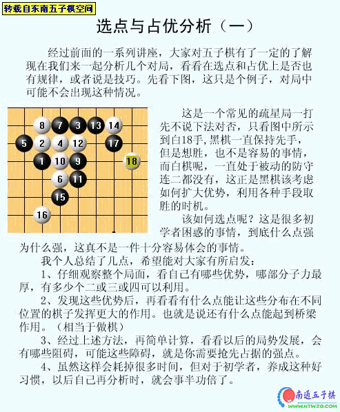

选点与占优分析[东南五子棋讲座]
#1 选点与占优分析[东南五子棋讲座] 作者：有志青年 发表时间：2006-12-2 14:06:36
一、选点与占优（阶段小结）


#2 选点与占优分析[东南五子棋讲座] 作者：有志青年 发表时间：2006-12-2 14:08:52
二、选点与占优（初识）

#3 选点与占优分析[东南五子棋讲座] 作者：有志青年 发表时间：2006-12-2 14:11:30
三、选点与占优（指挥的艺术）


#4 选点与占优分析[东南五子棋讲座] 作者：有志青年 发表时间：2006-12-2 14:14:28
四、选点与占优（五子棋的阵法）


#5 Re:选点与占优分析[东南五子棋讲座] 作者：九月菊 发表时间：2007-1-4 12:03:39

#6 Re:选点与占优分析[东南五子棋讲座] 作者：聪明有余 发表时间：2007-1-30 16:32:08
好东西！支持！#7 Re:选点与占优分析[东南五子棋讲座] 作者：xr__ 发表时间：2007-2-6 16:36:07
好文章啊！！！#8 Re:选点与占优分析[东南五子棋讲座] 作者：庐山龙飞翔 发表时间：2007-2-7 22:21:41
我想请教：阶段小节2，恒星局，如果白下一手沿20，14，12冲四后，再挡住3，5，9的冲四，那是不是就防住黑了呢？
谢谢老师
#9 Re:选点与占优分析[东南五子棋讲座] 作者：悬壶 发表时间：2007-2-10 18:13:42
谢谢了！！！！！！！精彩！！！！！！#10 Re:选点与占优分析[东南五子棋讲座] 作者：五子天下 发表时间：2008-5-28 16:39:56
想收藏~想收藏~想收藏~想收藏~想收藏~#11 Re:选点与占优分析[东南五子棋讲座] 作者：双队长 发表时间：2008-5-30 15:16:31
实战出真知.......#12 Re:选点与占优分析[东南五子棋讲座] 作者：先期 发表时间：2008-6-1 21:19:35
好贴！大力支持，辛苦了！#13 Re:选点与占优分析[东南五子棋讲座] 作者：爱在晴天 发表时间：2008-6-10 19:27:51
一、选点与占优（阶段小结）中阶段小结（二）的白16手是不是位置错了，没有挡住黑棋的冲4呀。呵呵，#14 Re:选点与占优分析[东南五子棋讲座] 作者：爱在晴天 发表时间：2008-6-10 21:38:37
三、选点与占优（指挥的艺术）的第三个图，“如果黑在B点活三，那么白C点反三，黑棋挡B点”这个错了，应该是黑棋挡D点。#15 Re:选点与占优分析[东南五子棋讲座] 作者：满天星 发表时间：2011-4-30 14:46:35
看看 白18手~ 手误吧~~
#16 Re:选点与占优分析[东南五子棋讲座] 作者：满天星 发表时间：2011-4-30 14:49:41
燕阵的16手~~#17 Re:选点与占优分析[东南五子棋讲座] 作者：情由心生 发表时间：2011-6-12 10:35:30
图2 16手是不是下错了？
#18 Re:选点与占优分析[东南五子棋讲座] 作者：董明 发表时间：2011-6-14 20:48:30
谢谢，真是好东西，谢谢楼主